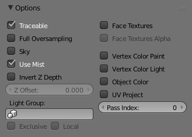

Options¶

Material Options panel.
This panel provides a series of control options concerning how objects using this material will appear in the rendered image. All controls are default "Off" unless otherwise stated.
- Traceable
- Include this material and the geometry that uses it in ray-tracing calculations. See Transparency for details of ray tracing.
- Full Oversampling
- Force this material to render full shading and textures for all anti-aliasing samples.
- Sky
- Render this material with zero alpha, but with sky background in place (scanline only).
- Use Mist
- Use mist on this material (see "World Settings" for more details).
- Invert Z depth
- Render material's faces with an inverted Z-buffer (scanline only).
- Z Offset
- Give faces an artificial Z offset for Z transparency.
- Light Group
- Limit lighting to lamps in this light group.
- Exclusive
- Uses the light group exclusively. These lamps will be excluded from other scene lighting.
- Local
- When linked in, uses local light group with the same name.
- Face Textures
- Replace object's base color with color from UV map image textures.
- Face Textures Alpha
- Replace object's base alpha with alpha from UV map image textures.
- Vertex Color Paint
- Replace object's base color with vertex paint colors (multiply with 'texture face' face assigned textures).
- Vertex Color Light
- Add vertex paint colors as additional lighting. (This can be used to produce good incandescence effects).
- Object Color
- Modulate the result with a per object color. See Object Display panel.
- UV Project
- Use to ensure UV interpolation is correct for camera projections (use with UV Project Modifier).
- Pass Index
- Index number for the Material Index render pass.